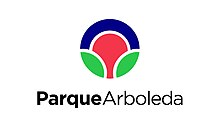

Parque Arboleda Centro Comercial es un complejo comercial y de oficinas perteneciente al grupo chileno Parque Arauco, ubicado en la ciudad de Pereira, Risaralda, Colombia, en la Avenida Circunvalar. Es el centro comercial más grande del Eje Cafetero con 41 000 m² arrendables, además de tener una de las mejores ofertas comerciales en la ciudad y la región, contando con tres almacenes ancla ( Zara, Éxito y Falabella)1 zona de entretenimiento, 6 salas de cine Cinemark, gimnasio, un patio de comidas con diversos restaurantes, así como también entidades financieras y grandes marcas locales e internacionales.
